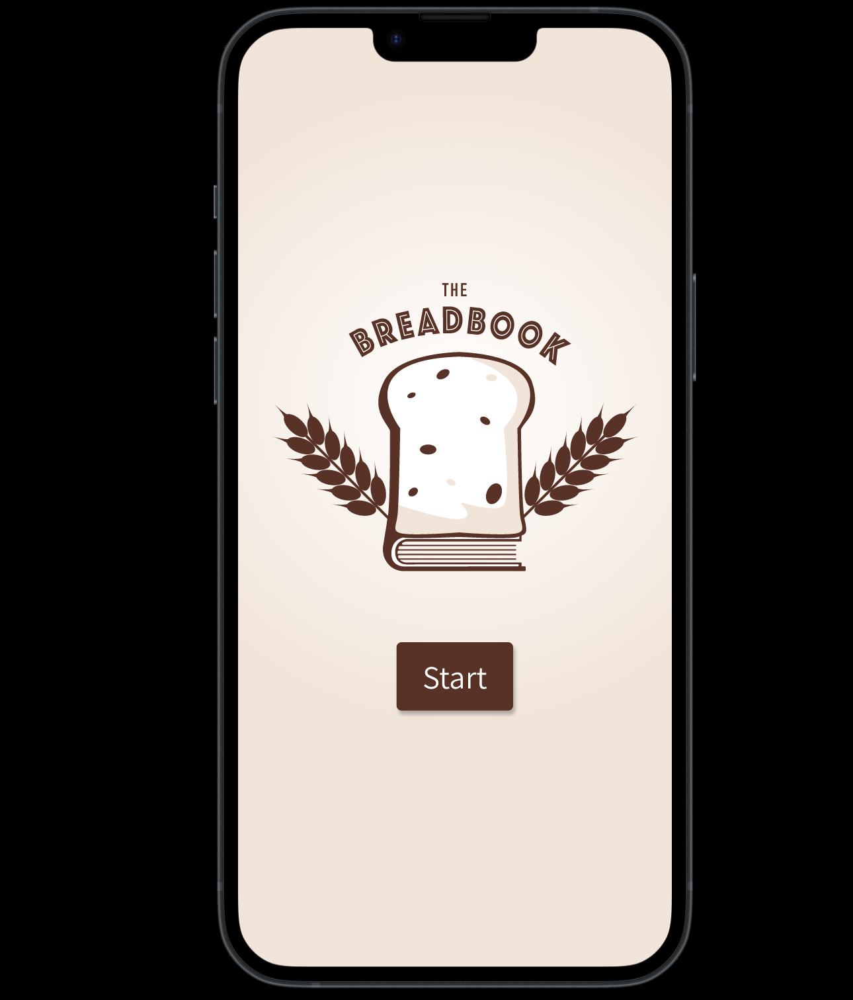
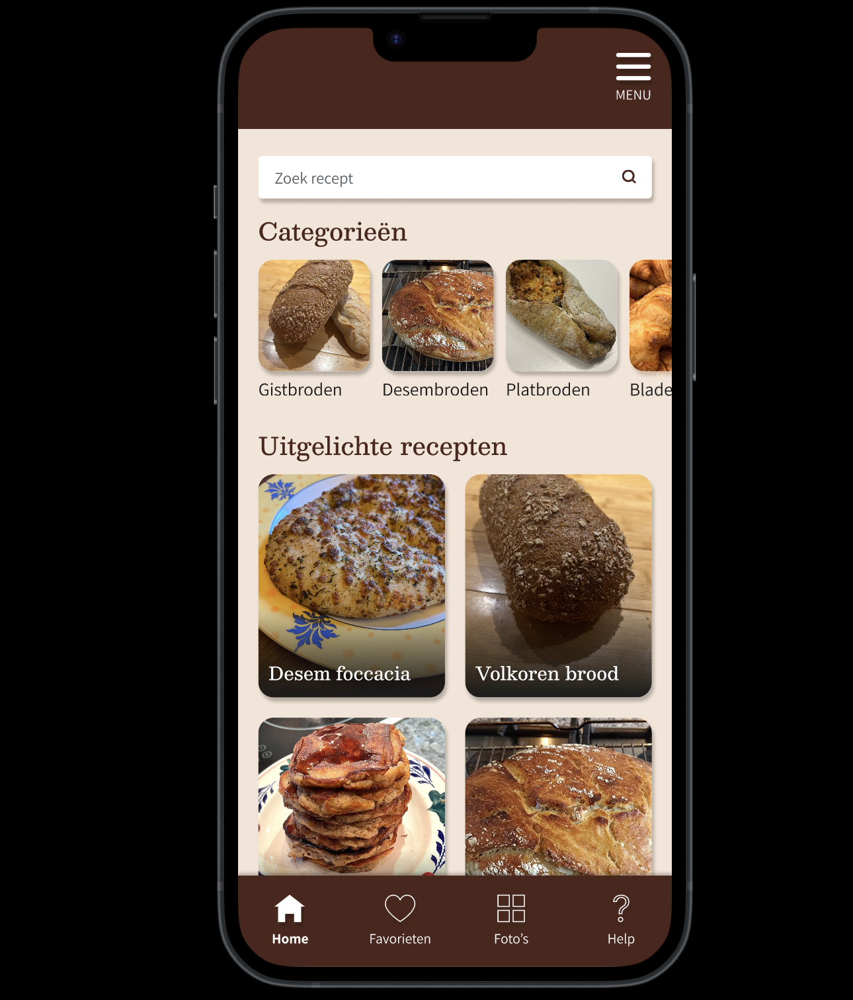
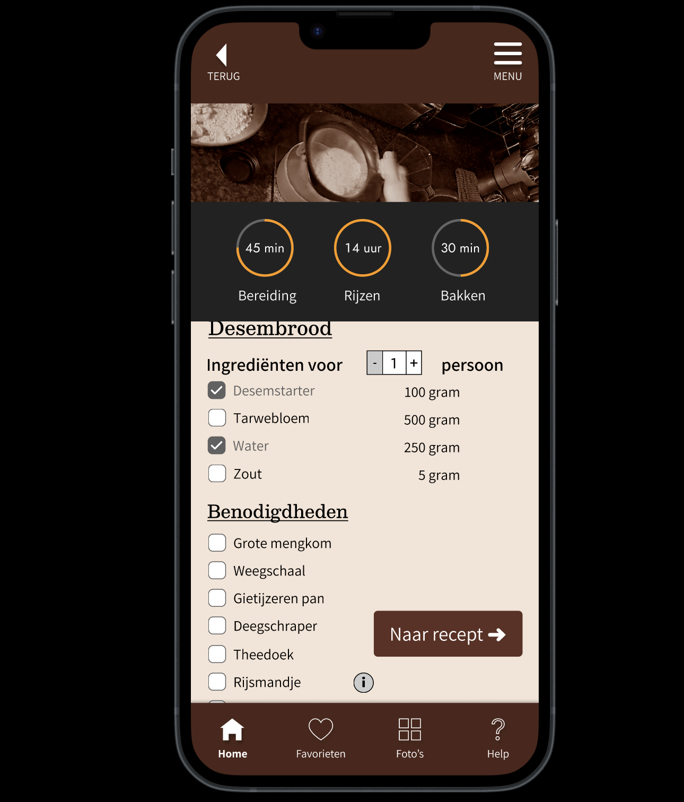

My first journey into user-centered design: crafting a baking app in Figma.



BreadBook marked my initial hands-on experience in the realm of user research and collaborative app development using Figma. As a first-year project, it served as a crucial introduction to the fundamental stages of the design process. I actively participated in conducting initial user research, which provided invaluable insights that directly influenced our design decisions. This project allowed me to grasp the importance of understanding user needs as the foundation for creating a meaningful and effective product.
Throughout the BreadBook project, I gained practical experience in how design evolves. We moved from rough sketches to detailed designs in Figma, constantly making improvements. An important part of this was doing user experience tests. This helped us see if our changes were actually making the app easier and better to use. Working closely with my team, sharing ideas, and learning from these tests was key to creating a product we were proud of. This project highlighted the value of teamwork and using feedback to guide our design decisions.